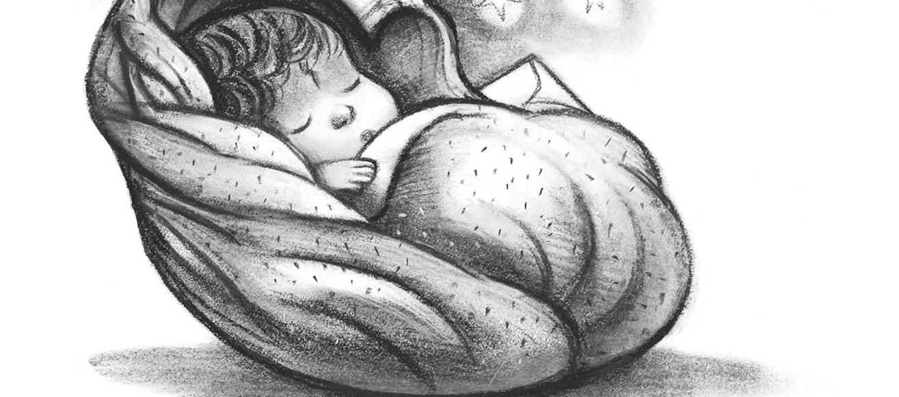

Once Upon a Page
Once Upon a Page

Harry Potter and the Philosopher's Stone
The UK edition of Harry's first year at a school of magic.

Chapter One: The Boy Who Lived
Mr and Mrs Dursley, of number four, Privet Drive, were proud to say that they were perfectly normal, thank you very much. They were the last people you’d expect to be involved in anything strange or mysterious, because they just didn’t hold with such nonsense.
Mr Dursley was the director of a firm called Grunnings, which made drills. He was a big, beefy man with hardly any neck, although he did have a very large moustache. Mrs Dursley was thin and blonde and had nearly twice the usual amount of neck, which came in very useful as she spent so much of her time craning over garden fences, spying on the neighbours. The Dursleys had a small son called Dudley and in their opinion there was no finer boy anywhere.
The Dursleys had everything they wanted, but they also had a secret, and their greatest fear was that somebody would discover it. They didn’t think they could bear it if anyone found out about the Potters. Mrs Potter was Mrs Dursley’s sister, but they hadn’t met for several years; in fact, Mrs Dursley pretended she didn’t have a sister, because her sister and her good-for-nothing husband were as unDursleyish as it was possible to be.
The Dursleys shuddered to think what the neighbours would say if the Potters arrived in the street. The Dursleys knew that the Potters had a small son, too, but they had never even seen him. This boy was another good reason for keeping the Potters away; they didn’t want Dudley mixing with a child like that.
When Mr and Mrs Dursley woke up on the dull, grey Tuesday our story starts, there was nothing about the cloudy sky outside to suggest that strange and mysterious things would soon be happening all over the country. Mr Dursley hummed as he picked out his most boring tie for work and Mrs Dursley gossiped away happily as she wrestled a screaming Dudley into his high chair.
None of them noticed a large tawny owl flutter past the window.
At half past eight, Mr Dursley picked up his briefcase, pecked Mrs Dursley on the cheek and tried to kiss Dudley goodbye but missed, because Dudley was now having a tantrum and throwing his cereal at the walls. ‘Little tyke,’ chortled Mr Dursley as he left the house. He got into his car and backed out of number four’s drive.
It was on the corner of the street that he noticed the first sign of something peculiar – a cat reading a map. For a second, Mr Dursley didn’t realise what he had seen – then he jerked his head around to look again. There was a tabby cat standing on the corner of Privet Drive, but there wasn’t a map in sight. What could he have been thinking of? It must have been a trick of the light. Mr Dursley blinked and stared at the cat. It stared back.
As Mr Dursley drove around the corner and up the road, he watched the cat in his mirror. It was now reading the sign that said Privet Drive – no, looking at the sign; cats couldn’t read maps or signs. Mr Dursley gave himself a little shake and put the cat out of his mind. As he drove towards town he thought of nothing except a large order of drills he was hoping to get that day.
But on the edge of town, drills were driven out of his mind by something else. As he sat in the usual morning traffic jam, he couldn’t help noticing that there seemed to be a lot of strangely dressed people about. People in cloaks. Mr Dursley couldn’t bear people who dressed in funny clothes – the get-ups you saw on young people! He supposed this was some stupid new fashion.
He drummed his fingers on the steering wheel and his eyes fell on a huddle of these weirdos standing quite close by. They were whispering excitedly together. Mr Dursley was enraged to see that a couple of them weren’t young at all; why, that man had to be older than he was, and wearing an emerald-green cloak! The nerve of him! But then it struck Mr Dursley that this was probably some silly stunt – these people were obviously collecting for something … yes, that would be it. The traffic moved on, and a few minutes later, Mr Dursley arrived in the Grunnings car park, his mind back on drills.
Mr Dursley always sat with his back to the window in his office on the ninth floor. If he hadn’t, he might have found it harder to concentrate on drills that morning. He didn’t see the owls swooping past in broad daylight, though people down in the street did; they pointed and gazed open-mouthed as owl after owl sped overhead. Most of them had never seen an owl even at night-time.
Mr Dursley, however, had a perfectly normal, owl-free morning. He yelled at five different people. He made several important telephone calls and shouted a bit more. He was in a very good mood until lunch-time, when he thought he’d stretch his legs and walk across the road to buy himself a bun from the baker’s opposite.
He’d forgotten all about the people in cloaks until he passed a group of them next to the baker’s. He eyed them angrily as he passed. He didn’t know why, but they made him uneasy. This lot were whispering excitedly, too, and he couldn’t see a single collecting tin. It was on his way back past them, clutching a large doughnut in a bag, that he caught a few words of what they were saying.
‘The Potters, that’s right, that’s what I heard —’
‘– yes, their son, Harry —’
Mr Dursley stopped dead. Fear flooded him. He looked back at the whisperers as if he wanted to say something to them, but thought better of it.
He dashed back across the road, hurried up to his office, snapped at his secretary not to disturb him, seized his telephone and had almost finished dialling his home number when he changed his mind. He put the receiver back down and stroked his moustache, thinking … no, he was being stupid. Potter wasn’t such an unusual name. He was sure there were lots of people called Potter who had a son called Harry.
Come to think of it, he wasn’t even sure his nephew was called Harry. He’d never even seen the boy. It might have been Harvey. Or Harold. There was no point in worrying Mrs Dursley, she always got so upset at any mention of her sister. He didn’t blame her – if he’d had a sister like that … but all the same, those people in cloaks …
He found it a lot harder to concentrate on drills that afternoon, and when he left the building at five o’clock, he was still so worried that he walked straight into someone just outside the door.
‘Sorry,’ he grunted, as the tiny old man stumbled and almost fell. It was a few seconds before Mr Dursley realised that the man was wearing a violet cloak. He didn’t seem at all upset at being almost knocked to the ground. On the contrary, his face split into a wide smile and he said in a squeaky voice that made passers-by stare: ‘Don’t be sorry, my dear sir, for nothing could upset me today! Rejoice, for You-Know-Who has gone at last! Even Muggles like yourself should be celebrating, this happy, happy day!’
And the old man hugged Mr Dursley around the middle and walked off.
Mr Dursley stood rooted to the spot. He had been hugged by a complete stranger. He also thought he had been called a Muggle, whatever that was. He was rattled. He hurried to his car and set off home, hoping he was imagining things, which he had never hoped before, because he didn’t approve of imagination.
As he pulled into the driveway of number four, the first thing he saw – and it didn’t improve his mood – was the tabby cat he’d spotted that morning. It was now sitting on his garden wall. He was sure it was the same one; it had the same markings around its eyes.
‘Shoo!’ said Mr Dursley loudly.
The cat didn’t move. It just gave him a stern look. Was this normal cat behaviour, Mr Dursley wondered. Trying to pull himself together, he let himself into the house. He was still determined not to mention anything to his wife.